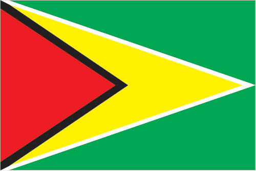
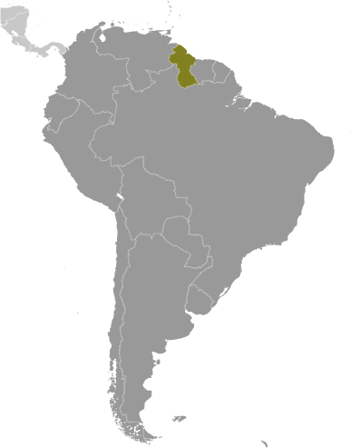
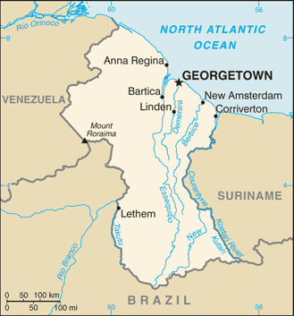

South America :: GUYANA
Introduction :: GUYANA
-
Originally a Dutch colony in the 17th century, by 1815 Guyana had become a British possession. The abolition of slavery led to settlement of urban areas by former slaves and the importation of indentured servants from India to work the sugar plantations. The resulting ethnocultural divide has persisted and has led to turbulent politics. Guyana achieved independence from the UK in 1966, and since then it has been ruled mostly by socialist-oriented governments. In 1992, Cheddi JAGAN was elected president in what is considered the country's first free and fair election since independence. After his death five years later, his wife, Janet JAGAN, became president but resigned in 1999 due to poor health. Her successor, Bharrat JAGDEO, was elected in 2001 and again in 2006. Early elections held in May 2015 resulted in the first change in governing party and the replacement of President Donald RAMOTAR by current President David GRANGER
Geography :: GUYANA
-
Northern South America, bordering the North Atlantic Ocean, between Suriname and Venezuela5 00 N, 59 00 WSouth Americatotal: 214,969 sq kmland: 196,849 sq kmwater: 18,120 sq kmcountry comparison to the world: 86slightly smaller than Idahototal: 2,933 kmborder countries (3): Brazil 1,308 km, Suriname 836 km, Venezuela 789 km459 kmterritorial sea: 12 nmexclusive economic zone: 200 nmcontinental shelf: 200 nm or to the outer edge of the continental margintropical; hot, humid, moderated by northeast trade winds; two rainy seasons (May to August, November to January)mostly rolling highlands; low coastal plain; savanna in southmean elevation: 207 melevation extremes: lowest point: Atlantic Ocean 0 mhighest point: Laberintos del Norte on Mount Roraima 2,775 mbauxite, gold, diamonds, hardwood timber, shrimp, fishagricultural land: 8.4%arable land 2.1%; permanent crops 0.1%; permanent pasture 6.2%forest: 77.4%other: 14.2% (2011 est.)1,430 sq km (2012)population is heavily concentrated in the northeast in and around Georgetown, with notable concentrations along the Berbice River to the east; the remainder of the country is sparsely populatedflash flood threat during rainy seasonswater pollution from sewage and agricultural and industrial chemicals; deforestationparty to: Biodiversity, Climate Change, Climate Change-Kyoto Protocol, Desertification, Endangered Species, Hazardous Wastes, Law of the Sea, Ozone Layer Protection, Ship Pollution, Tropical Timber 83, Tropical Timber 94signed, but not ratified: none of the selected agreementsthe third-smallest country in South America after Suriname and Uruguay; substantial portions of its western and eastern territories are claimed by Venezuela and Suriname respectively; contains some of the largest unspoiled rainforests on the continent
People and Society :: GUYANA
-
737,718note: estimates for this country explicitly take into account the effects of excess mortality due to AIDS; this can result in lower life expectancy, higher infant mortality, higher death rates, lower population growth rates, and changes in the distribution of population by age and sex than would otherwise be expected (July 2017 est.)country comparison to the world: 166noun: Guyanese (singular and plural)adjective: GuyaneseEast Indian 39.8%, black (African) 29.3%, mixed 19.9%, Amerindian 10.5%, other 0.5% (includes Portuguese, Chinese, white) (2012 est.)English (official), Guyanese Creole, Amerindian languages (including Caribbean and Arawak languages), Indian languages (including Caribbean Hindustani, a dialect of Hindi), Chinese (2014 est.)Protestant 34.8% (Pentecostal 22.8%, Seventh Day Adventist 5.4%, Anglican 5.2%, Methodist 1.4%), Hindu 24.8%, Roman Catholic 7.1%, Muslim 6.8%, Jehovah's Witness 1.3%, Rastafarian 0.5%, other Christian 20.8%, other 0.9%, none 3.1% (2012 est.)Guyana is the only English-speaking country in South America and shares cultural and historical bonds with the Anglophone Caribbean. Guyana's two largest ethnic groups are the Afro-Guyanese (descendants of African slaves) and the Indo-Guyanese (descendants of Indian indentured laborers), which together comprise about three quarters of Guyana's population. Tensions periodically have boiled over between the two groups, which back ethnically based political parties and vote along ethnic lines. Poverty reduction has stagnated since the late 1990s. About one-third of the Guyanese population lives below the poverty line; indigenous people are disproportionately affected. Although Guyana's literacy rate is reported to be among the highest in the Western Hemisphere, the level of functional literacy is considerably lower, which has been attributed to poor education quality, teacher training, and infrastructure.Guyana's emigration rate is among the highest in the world - more than 55% of its citizens reside abroad - and it is one of the largest recipients of remittances relative to GDP among Latin American and Caribbean counties. Although remittances are a vital source of income for most citizens, the pervasive emigration of skilled workers deprives Guyana of professionals in healthcare and other key sectors. More than 80% of Guyanese nationals with tertiary level educations have emigrated. Brain drain and the concentration of limited medical resources in Georgetown hamper Guyana's ability to meet the health needs of its predominantly rural population. Guyana has one of the highest HIV prevalence rates in the region and continues to rely on international support for its HIV treatment and prevention programs.0-14 years: 26.22% (male 98,506/female 94,949)15-24 years: 21.56% (male 81,487/female 77,567)25-54 years: 38.1% (male 146,915/female 134,145)55-64 years: 8.03% (male 26,924/female 32,345)65 years and over: 6.08% (male 18,421/female 26,459) (2017 est.)total dependency ratio: 53.5youth dependency ratio: 45.8elderly dependency ratio: 7.7potential support ratio: 13.3 (2015 est.)total: 26.2 yearsmale: 25.9 yearsfemale: 26.6 years (2017 est.)country comparison to the world: 1500.32% (2017 est.)country comparison to the world: 17415.4 births/1,000 population (2017 est.)country comparison to the world: 1237.4 deaths/1,000 population (2017 est.)country comparison to the world: 112-4.8 migrant(s)/1,000 population (2017 est.)country comparison to the world: 190population is heavily concentrated in the northeast in and around Georgetown, with noteable concentrations along the Berbice River to the east; the remainder of the country is sparsely populatedurban population: 28.8% of total population (2017)rate of urbanization: 0.91% annual rate of change (2015-20 est.)GEORGETOWN (capital) 124,000 (2014)at birth: 1.05 male(s)/female0-14 years: 1.04 male(s)/female15-24 years: 1.05 male(s)/female25-54 years: 1.09 male(s)/female55-64 years: 0.82 male(s)/female65 years and over: 0.71 male(s)/femaletotal population: 1.02 male(s)/female (2016 est.)20.8 yearsnote: median age at first birth among women 25-29 (2009 est.)229 deaths/100,000 live births (2015 est.)country comparison to the world: 47total: 30.4 deaths/1,000 live birthsmale: 34.2 deaths/1,000 live birthsfemale: 26.5 deaths/1,000 live births (2017 est.)country comparison to the world: 63total population: 68.6 yearsmale: 65.6 yearsfemale: 71.8 years (2017 est.)country comparison to the world: 1652 children born/woman (2017 est.)country comparison to the world: 12133.9% (2014)5.2% of GDP (2014)country comparison to the world: 1340.21 physicians/1,000 population (2010)2 beds/1,000 population (2009)improved:urban: 98.2% of populationrural: 98.3% of populationtotal: 98.3% of populationunimproved:urban: 1.8% of populationrural: 1.7% of populationtotal: 1.7% of population (2015 est.)improved:urban: 87.9% of populationrural: 82% of populationtotal: 83.7% of populationunimproved:urban: 12.1% of populationrural: 18% of populationtotal: 16.3% of population (2015 est.)1.6% (2016 est.)country comparison to the world: 328,500 (2016 est.)country comparison to the world: 99<200 (2016 est.)degree of risk: very highfood or waterborne diseases: bacterial and protozoal diarrhea, hepatitis A, and typhoid fevervectorborne diseases: dengue fever and malarianote: active local transmission of Zika virus by Aedes species mosquitoes has been identified in this country (as of August 2016); it poses an important risk (a large number of cases possible) among US citizens if bitten by an infective mosquito; other less common ways to get Zika are through sex, via blood transfusion, or during pregnancy, in which the pregnant woman passes Zika virus to her fetus (2016)20.2% (2016)country comparison to the world: 1018.5% (2014)country comparison to the world: 673.2% of GDP (2012)country comparison to the world: 136definition: age 15 and over has ever attended schooltotal population: 88.5%male: 87.2%female: 89.8% (2015 est.)total: 10 yearsmale: 10 yearsfemale: 10 years (2012)
Government :: GUYANA
-
conventional long form: Cooperative Republic of Guyanaconventional short form: Guyanaformer: British Guianaetymology: the name is derived from Guiana, the original name for the region that included British Guiana, Dutch Guiana, and French Guiana; ultimately the word is derived from an indigenous Amerindian language and means "Land of Many Waters" (referring to the area's multitude of rivers and streams)parliamentary republicname: Georgetowngeographic coordinates: 6 48 N, 58 09 Wtime difference: UTC-4 (1 hour ahead of Washington, DC, during Standard Time)10 regions; Barima-Waini, Cuyuni-Mazaruni, Demerara-Mahaica, East Berbice-Corentyne, Essequibo Islands-West Demerara, Mahaica-Berbice, Pomeroon-Supenaam, Potaro-Siparuni, Upper Demerara-Berbice, Upper Takutu-Upper Essequibo26 May 1966 (from the UK)Republic Day, 23 February (1970)several previous; latest promulgated 6 October 1980; amended many times, last in 2009 (2017)common law system, based on the English model, with some Roman-Dutch civil law influencehas not submitted an ICJ jurisdiction declaration; accepts ICCt jurisdictioncitizenship by birth: yescitizenship by descent: yesdual citizenship recognized: noresidency requirement for naturalization: na18 years of age; universalchief of state: President David GRANGER (since 16 May 2015); note - the president is both chief of state and head of governmenthead of government: President David GRANGER (since 16 May 2015)cabinet: Cabinet of Ministers appointed by the president, responsible to the National Assemblyelections/appointments: the predesignated candidate of the winning party in the last National Assembly election becomes president for a 5-year term (no term limits); election last held on 11 May 2015 (next to be held no later than 2020); prime minister appointed by the presidentelection results: David GRANGER (APNU-AFC) designated president by the majority party in the National Assemblydescription: unicameral National Assembly (65 seats; members directly elected in multi-seat constituencies and a single nationwide constituency by proportional representation vote; members serve 5-year terms)elections: last held on 11 May 2015 (next to be held by May 2020)election results: percent of vote by party - APNU-AFC 50.3%, PPP/C 49.2%, other 0.5%; seats by party - APNU-AFC 33, PPP/C 32highest court(s): Supreme Court of Judicature (consists of the Court of Appeal with a chief justice and 3 justices, and the High Court with a chief justice and 10 justices organized into 3- or 5-judge panels); note - in 2009, Guyana ceased final appeals in civil and criminal cases to the Judicial Committee of the Privy Council (in London), replacing it with the Caribbean Court of Justice, the judicial organ of the Caribbean Communityjudge selection and term of office: Court of Appeal and High Court chief justices appointed by the president; other judges of both courts appointed by the Judicial Service Commission, a body appointed by the president; judges appointed for life with retirement at age 65subordinate courts: Land Court; magistrates' courtsA Partnership for National Unity or APNU [David A. GRANGER]Alliance for Change or AFC [Raphael TROTMAN]Justice for All Party [C.N. SHARMA]National Independent Party or NIP [Saphier Husain SUBEDAR]People's Progressive Party/Civic or PPP/C [Donald RAMOTAR]The United Force or TUF [Manzoor NADIR]United Republican Party or URP [Vishnu BANDHU]Amerindian People's AssociationGuyana Bar AssociationGuyana Citizens InitiativeGuyana Human Rights AssociationGuyana Public Service Union or GPSUGuyana Trans UnitedPrivate Sector CommissionSociety Against Sexual Orientation Discrimination or SASODTrades Union CongressACP, AOSIS, C, Caricom, CD, CDB, CELAC, FAO, G-77, IADB, IBRD, ICAO, ICCt, ICRM, IDA, IFAD, IFC, IFRCS, ILO, IMF, IMO, Interpol, IOC, IOM, ISO (correspondent), ITU, LAES, MIGA, NAM, OAS, OIC, OPANAL, OPCW, PCA, Petrocaribe, UN, UNASUR, UNCTAD, UNESCO, UNIDO, UPU, WCO, WFTU (NGOs), WHO, WIPO, WMO, WTOchief of mission: Ambassador Riyad David INSANALLY (since 16 Sept 2016)chancery: 2490 Tracy Place NW, Washington, DC 20008telephone: [1] (202) 265-6900FAX: [1] (202) 232-1297consulate(s) general: New Yorkchief of mission: Ambassador Perry L. HOLLOWAY (since 2 October 2015)embassy: US Embassy, 100 Young and Duke Streets, Kingston, Georgetownmailing address: P. O. Box 10507, Georgetown; US Embassy, 3170 Georgetown Place, Washington DC 20521-3170telephone: [592] 225-4900 through 4909FAX: [592] 225-8497green with a red isosceles triangle (based on the hoist side) superimposed on a long, yellow arrowhead; there is a narrow, black border between the red and yellow, and a narrow, white border between the yellow and the green; green represents forest and foliage; yellow stands for mineral resources and a bright future; white symbolizes Guyana's rivers; red signifies zeal and the sacrifice of the people; black indicates perseveranceCanje pheasant (hoatzin), jaguar, Victoria Regia water lily; national colors: red, yellow, green, black, whitename: "Dear Land of Guyana, of Rivers and Plains"lyrics/music: Archibald Leonard LUKERL/Robert Cyril Gladstone POTTERnote: adopted 1966
Economy :: GUYANA
-
The Guyanese economy exhibited moderate economic growth in recent years and is based largely on agriculture and extractive industries. The economy is heavily dependent upon the export of six commodities - sugar, gold, bauxite, shrimp, timber, and rice - which represent nearly 60% of the country's GDP and are highly susceptible to adverse weather conditions and fluctuations in commodity prices. Much of Guyana's growth in recent years has come from a surge in gold production in response to global prices, although downward trends in gold prices may threaten future growth. In 2014, production of sugar dropped to a 24-year low.Guyana's entrance into the Caricom Single Market and Economy in January 2006 broadened the country's export market, primarily in the raw materials sector. Guyana has experienced positive growth almost every year over the past decade. Inflation has been kept under control. Recent years have seen the government's stock of debt reduced significantly - with external debt now less than half of what it was in the early 1990s. Despite recent improvements, the government is still juggling a sizable external debt against the urgent need for expanded public investment. In March 2007, the Inter-American Development Bank, Guyana's principal donor, canceled Guyana's nearly $470 million debt, equivalent to 21% of GDP, which along with other Highly Indebted Poor Country debt forgiveness, brought the debt-to-GDP ratio down from 183% in 2006 to 67% in 2015. Guyana had become heavily indebted as a result of the inward-looking, state-led development model pursued in the 1970s and 1980s. Chronic problems include a shortage of skilled labor and a deficient infrastructure.$6.045 billion (2016 est.)$5.778 billion (2015 est.)$5.542 billion (2014 est.)note: data are in 2016 dollarscountry comparison to the world: 168$3.437 billion (2016 est.)3.3% (2016 est.)3.1% (2015 est.)3.8% (2014 est.)country comparison to the world: 85$7,900 (2016 est.)$7,600 (2015 est.)$7,400 (2014 est.)note: data are in 2016 dollarscountry comparison to the world: 15115.3% of GDP (2016 est.)8.2% of GDP (2015 est.)6.9% of GDP (2014 est.)country comparison to the world: 53household consumption: 71.9%government consumption: 18.4%investment in fixed capital: 22.6%investment in inventories: 2.4%exports of goods and services: 51.1%imports of goods and services: -66.4% (2016 est.)agriculture: 17.4%industry: 35.9%services: 46.8% (2016 est.)sugarcane, rice, edible oils; beef, pork, poultry; shrimp, fishbauxite, sugar, rice milling, timber, textiles, gold mining23.3% (2016 est.)country comparison to the world: 3313,800 (2013 est.)country comparison to the world: 163agriculture: NA%industry: NA%services: NA%11.1% (2013)11.3% (2012)country comparison to the world: 14135% (2006 est.)lowest 10%: 1.3%highest 10%: 33.8% (1999)44.6 (2007)43.2 (1999)country comparison to the world: 42revenues: $896.7 millionexpenditures: $1.05 billion (2016 est.)26.1% of GDP (2016 est.)country comparison to the world: 113-4.5% of GDP (2016 est.)country comparison to the world: 14546.8% of GDP (2016 est.)48.2% of GDP (2015 est.)country comparison to the world: 108calendar year0.8% (2016 est.)-1.1% (2015 est.)country comparison to the world: 865.5% (31 December 2011)4.25% (31 December 2010)country comparison to the world: 7413% (31 December 2016 est.)12.83% (31 December 2015 est.)country comparison to the world: 60$701.4 million (31 December 2016 est.)$631 million (31 December 2015 est.)country comparison to the world: 162$1.7 billion (31 December 2016 est.)$1.62 billion (31 December 2015 est.)country comparison to the world: 159$1.875 billion (31 December 2016 est.)$1.492 billion (31 December 2015 est.)country comparison to the world: 149$610.9 million (31 December 2012 est.)$440.4 million (31 December 2011 est.)$339.8 million (31 December 2010 est.)country comparison to the world: 111$14 million (2016 est.)$-144.2 million (2015 est.)country comparison to the world: 52$1.38 billion (2016 est.)$1.17 billion (2015 est.)country comparison to the world: 150sugar, gold, bauxite, alumina, rice, shrimp, molasses, rum, timberCanada 30.6%, US 20.7%, Trinidad and Tobago 11.4% (2016)$1.555 billion (2016 est.)$1.475 billion (2015 est.)country comparison to the world: 168manufactures, machinery, petroleum, foodTrinidad and Tobago 29%, US 27.5%, China 7.3%, Suriname 5.5% (2016)$581 million (31 December 2016 est.)$531.9 million (31 December 2015 est.)country comparison to the world: 138$1.542 billion (31 December 2016 est.)$1.639 billion (31 December 2015 est.)country comparison to the world: 156Guyanese dollars (GYD) per US dollar -206.5 (2016 est.)206.5 (2015 est.)206.5 (2014 est.)206.45 (2013 est.)204.36 (2012 est.)
Energy :: GUYANA
-
population without electricity: 154,540electrification - total population: 79%electrification - urban areas: 91%electrification - rural areas: 75% (2012)1 billion kWh (2015 est.)country comparison to the world: 151800 million kWh (2015 est.)country comparison to the world: 1620 kWh (2016 est.)country comparison to the world: 1460 kWh (2016 est.)country comparison to the world: 159438,000 kW (2015 est.)country comparison to the world: 14986.8% of total installed capacity (2015 est.)country comparison to the world: 710% of total installed capacity (2015 est.)country comparison to the world: 1050.2% of total installed capacity (2015 est.)country comparison to the world: 15313% of total installed capacity (2015 est.)country comparison to the world: 550 bbl/day (2016 est.)country comparison to the world: 1460 bbl/day (2014 est.)country comparison to the world: 1340 bbl/day (2014 est.)country comparison to the world: 1382.5 billion bbl (1 January 2017 est.)country comparison to the world: 340 bbl/day (2014 est.)country comparison to the world: 15413,000 bbl/day (2015 est.)country comparison to the world: 1540 bbl/day (2014 est.)country comparison to the world: 16413,250 bbl/day (2014 est.)country comparison to the world: 1340 cu m (2013 est.)country comparison to the world: 1460 cu m (2013 est.)country comparison to the world: 1910 cu m (2013 est.)country comparison to the world: 1180 cu m (2013 est.)country comparison to the world: 1360 cu m (1 January 2014 es)country comparison to the world: 1491.7 million Mt (2013 est.)country comparison to the world: 156
Communications :: GUYANA
-
total subscriptions: 153,000subscriptions per 100 inhabitants: 21 (July 2016 est.)country comparison to the world: 134total: 539,000subscriptions per 100 inhabitants: 73 (July 2016 est.)country comparison to the world: 167general assessment: reliable international long distance service; 100% digital network; national transmission supported by fiber optic cable and rural network by microwaves; more than 150,000 lines; many areas still lack fixed-line telephone servicesdomestic: fixed-line teledensity is about 20 per 100 persons; mobile-cellular teledensity about 75 per 100 personsinternational: country code - 592; SIP trunking to most providers; international calls via diverse fiber optic cables; satellite earth station - 1 Intelsat (Atlantic Ocean) (2017)government-dominated broadcast media; the National Communications Network (NCN) TV is state-owned; a few private TV stations relay satellite services; the state owns and operates 2 radio stations broadcasting on multiple frequencies capable of reaching the entire country; government limits on licensing of new private radio stations has constrained competition in broadcast media (2017).gytotal: 262,425percent of population: 35.7% (July 2016 est.)country comparison to the world: 149
Transportation :: GUYANA
-
number of registered air carriers: 2inventory of registered aircraft operated by air carriers: 12annual passenger traffic on registered air carriers: 43,835annual freight traffic on registered air carriers: 0 mt-km (2015)8R (2016)117 (2013)country comparison to the world: 50total: 111,524 to 2,437 m: 2914 to 1,523 m: 1under 914 m: 8 (2017)total: 1061,524 to 2,437 m: 1914 to 1,523 m: 16under 914 m: 89 (2013)total: 7,970 kmpaved: 590 kmunpaved: 7,380 km (2001)country comparison to the world: 141330 km (the Berbice, Demerara, and Essequibo Rivers are navigable by oceangoing vessels for 150 km, 100 km, and 80 km respectively) (2012)country comparison to the world: 91total: 10by type: cargo 7, petroleum tanker 2, refrigerated cargo 1registered in other countries: 3 (Saint Vincent and the Grenadines 2, unknown 1) (2010)country comparison to the world: 114major seaport(s): Georgetown
Military and Security :: GUYANA
-
1.42% of GDP (2016)1.46% of GDP (2015)1.28% of GDP (2014)1.18% of GDP (2013)1.18% of GDP (2012)country comparison to the world: 93Guyana Defense Force: Army (includes Air Corps, Coast Guard) (2012)18 years of age or older for voluntary military service; no conscription (2014)
Transnational Issues :: GUYANA
-
all of the area west of the Essequibo River is claimed by Venezuela preventing any discussion of a maritime boundary; Guyana has expressed its intention to join Barbados in asserting claims before UN Convention on the Law of the Sea (UNCLOS) that Trinidad and Tobago's maritime boundary with Venezuela extends into their waters; Suriname claims a triangle of land between the New and Kutari/Koetari Rivers in a historic dispute over the headwaters of the Courantynecurrent situation: Guyana is a source and destination country for men, women, and children subjected to sex trafficking and forced labor – children are particularly vulnerable; women and girls from Guyana, Venezuela, Suriname, Brazil, and the Dominican Republic are forced into prostitution in Guyana’s interior mining communities and urban areas; forced labor is reported in mining, agriculture, forestry, domestic service, and shops; Guyanese nationals are also trafficked to Suriname, Jamaica, and other Caribbean countries for sexual exploitation and forced labortier rating: Tier 2 Watch List – Guyana does not fully comply with the minimum standards for the elimination of trafficking; however, it is making significant efforts to do so; in 2014, Guyana was granted a waiver from an otherwise required downgrade to Tier 3 because its government has a written plan that, if implemented would constitute making significant efforts to bring itself into compliance with the minimum standards for the elimination of trafficking; the government released its anti-trafficking action plan in June 2014 but made uneven efforts to implement it; law enforcement was weak, investigating seven trafficking cases, prosecuting four alleged traffickers, and convicting one trafficker – a police officer – who was released on bail pending appeal; in 2014, as in previous years, Guyanese courts dismissed the majority of ongoing trafficking prosecutions; the government referred some victims to care services, which were provided by NGOs with little or no government support (2015)transshipment point for narcotics from South America - primarily Venezuela - to Europe and the US; producer of cannabis; rising money laundering related to drug trafficking and human smuggling